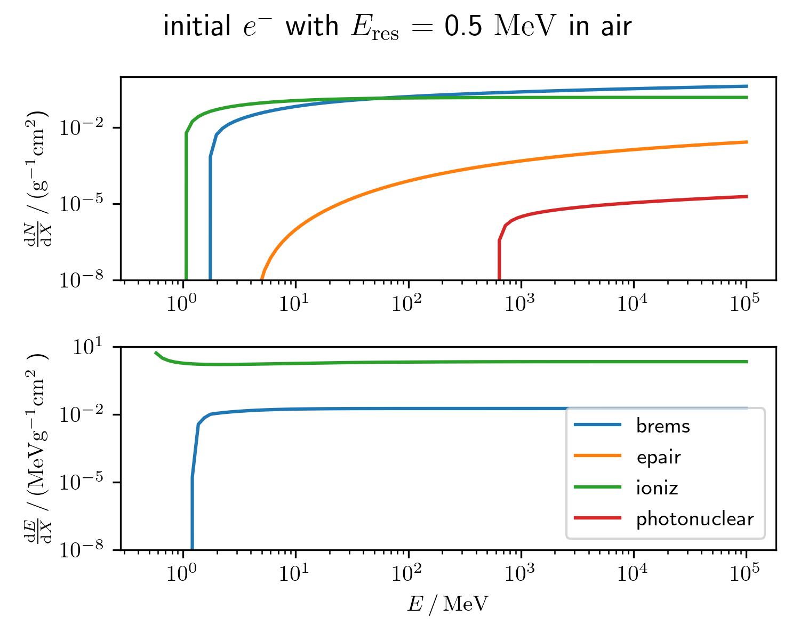
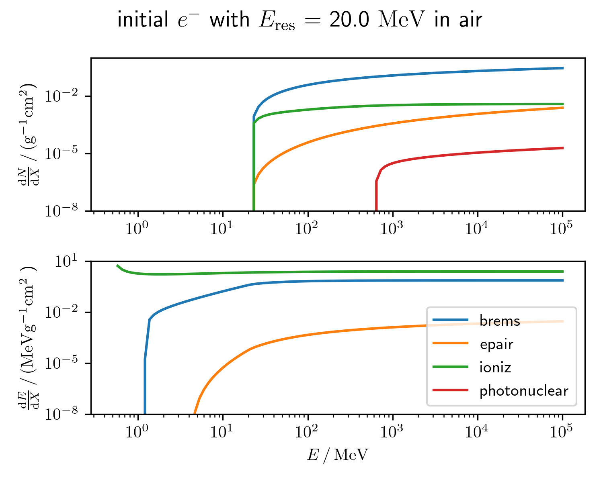

Reduce calculations with no effect on my observables
There are losses which are so small that they won't be propagated further. The aim is to reduce the number of invisible losses.
-
What are invisible losses?
Losses with an energy below a certain energy $E_\mathrm{res}$ can not been seen by the observer, because all secondary energies $E^i$ are smaller than the corresponding particle cut $\theta(E^i, \mathrm{type}^i)$. It is important that they are treated as a continuous loss, but there is no need to treat them stochastically. \begin{equation} \theta(E, \mathrm{type}) = \left\{ \begin{array}{l} E / E_\mathrm{type} > 1, \text{keep} \\ E / E_\mathrm{type} \leq 1, \text{remove} \end{array} \right. \end{equation} The energy $E_\mathrm{res}$ from which losses are treated stochastically is a hyperparameter in PROPOSAL and can be adjusted.
-
How much time do I save?
It really depends on the particle cut and the energy where losses $E_\mathrm{res}$ are treated stochastically. If by a clever choice of $E_\mathrm{res}$ the probability that they survive the ParticleCut $\theta$ can be increased, the runtime is reduced. A good approximation might be the rates $\mathrm{d}N/\mathrm{d}X$ of the particles.
 -
What is a good resolution cut?
There is no generally valid resolution cut. For example cherenkov telescopes are interested in the cherenkov light, not the charge asymmetry. Therefore losses that have no probability to produce secondaries which emit cherenkov light are useless. \begin{equation} E_\mathrm{min} = m c^2 \left(\frac{n}{\sqrt{n^2 -1}} -1 \right) \approx 20 \, \mathrm{MeV} \end{equation}
Runtime study
- $e^{-}$ init type
- 10 Tev primary energy
- 10 MeV particle cut
$E_\mathrm{res}$ dependence
- 20 MeV $E_\mathrm{res}$
- 76 sec time
- 10 MeV $E_\mathrm{res}$
- 91 sec time
- 0.5 MeV $E_\mathrm{res}$
- 109 sec time